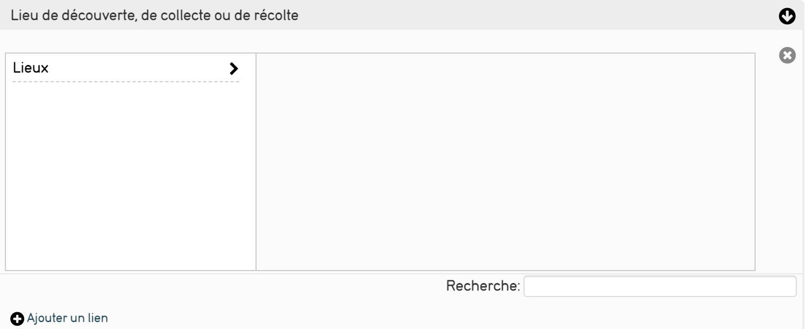
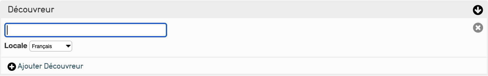
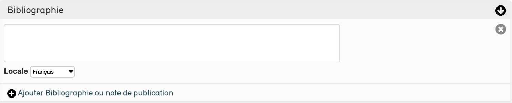

2. La saisie d’un objet dans CollectiveAccess¶
Qu’entend par objet ?¶
Les objets correspondent aux éléments que vous gérez. Vous pouvez diversifier votre collection en définissant des types d'objets.
Par exemple, le profil de Saisie Joconde (créé à partir des recommandations du Service des Musées de France) définit différents types d'objets dans deux grandes catégories d’objets :
- les biens affectés : collections propres de l’établissement
- les biens déposés : objets prêtés ou déposés par d’autres établissements
La liste des types d’objets est définie et paramètre selon vos collections, vous pouvez l’enrichir ou la modifier depuis le menu Gérer de CollectiveAccess.1
Cliquez ici pour récupérer le PDF officiel concernant la saisie Joconde.
Comment créer un objet ?¶
Pour créer un objet :
- lors de la saisie d’un objet lié, si celui-ci n’est pas déjà présent dans la base, CollectiveAccess vous propose de le créer au fil de l’eau. L'objet nouvellement crée alimente directement le fichier des objets.
Sinon :
- cliquez sur le menu « Nouveau » dans la barre de navigation principale.
- sélectionnez « Objet » dans le menu déroulant, puis choisissez un type (Bien affecté, bien déposé) pour créer un nouvel enregistrement.2
Tour des différents écrans de saisie¶
Détail de la saisie écran par écran¶
NB : les écrans et les métadonnées décrits correspondent à ceux mis en place au sein du profil Joconde et répondent aux spécifications du Service des Musées de France Les interfaces de saisie et les métadonnées sont modifiées en fonction de vos besoins et de votre fonctionnement ; nous décrivons ces fonctionnalités dans les supports de cours administration.
L'écran "Saisie Joconde" reprend les écrans "Identification", "Description du bien", "Contexte historique", "Statut juridique" et "Informations complémentaires". Pour y accéder directement donnez un Numéro d'inventaire à l'objet, enregistrez puis cliquez sur Saisie Joconde à gauche.
Identifier l'objet¶
Contient les informations les plus élémentaires pour enregistrer un nouvel objet.
Numéro d’inventaire¶
Saisissez un identifiant alphanumérique en respectant les règles de saisies définies au sein de votre établissement.

Autre numéro¶
Saisissez les autres numéros de référence de l’objet ; vous pouvez saisir plusieurs autres numéros.

Ancien numéro¶
Saisissez ici les anciens numéros qu'a pu avoir l'objet.
Domaine¶
Trouver le domaine de l'objet grâce à un champ auto-completif ou recherchez dans le thesaurus le domaine souhaité.
Lien vers le thesaurus sur OpenTheso

Dénomination¶
Saisissez ici la désignation (le nom commun de l'objet) utilisée pour votre objet. Un affixe est disponible pour plus de précision
Lien vers le thesaurus sur OpenTheso

Appellation¶
Saisissez ici toute autre désignation utilisée pour votre objet. L'appellation correspond souvent à la désignation de l'objet à son époque
Titre de l'oeuvre¶
Correspond au nom de l'objet. Attention ce champ est obligatoire : si l'objet ne possède pas de titre ou de position, vous pouvez saisir son identifiant.
Auteur, exécutant, collecteur¶
Saisissez ici le nom du producteur de l’objet. Ce champ est directement lié aux enregistrements « entités » :
- saisissez quelques lettres (au moins 3) et CollectiveAccess vous propose toutes les entités dont le nom commence par ces lettres, vous pouvez ensuite le sélectionner;
- si l’auteur saisi n’existe, une fenêtre pop-up vous permet de le créer directement depuis la saisie de l’objet et l’ajoute directement au fichier des entités.
- choissisez si l'entité lié à l'objet en est l'auteur , le collecteur, l'exécutant, le fabricant ou le créateur grâce à la liste à coté après avoir chosi l'auteur

Ecole¶
Indiquez dans ce champ l'école en lien avec le style de l'entité. 2 affixes sont disponibles pour plus de précision
Lien vers le thesaurus sur OpenTheso

Anciennes attributions¶
Correspond aux informations sur le(s) ancien(s) possesseur(s) de l'objet

Période de création/exécution¶
Recherchez la période de production de l'objet (si connu)

Millésime de création/exécution¶
Date de production précise de l'objet (si connu).

Époque, styles¶
Rentrez ici l'époque, le style et le mouvement de l'objet. Deux affixe sont disponibles afin de préciser où ce place l'objet durant l'époque, le style ou le mouvement
Lien vers le thesaurus sur OpenTheso

Description du bien¶
Contient les informations du physique de l'objet
Matériaux et techniques¶
Vous permet d’associer un ou plusieurs couple de matériaux et techniques à l’objet en les recherchant dans le thesaurus matériaux et techniques.
Lien vers le thesaurus sur OpenTheso

Dimensions¶
Saisissez ici les dimensions connues de l’objet : diamètre, profondeur, hauteur, poids ainsi que sa largeur. Indiquez l’unité de mesure à la suite de la valeur.
CollectiveAccess intègre la gestion de toutes les unités de mesures et les convertit lors des recherches effectuées.
Le champ "Type de dimensions" vous permet de préciser le type de mesure ou la partie mesurée si l'objet est complexe

Marques et inscriptions (inventaire)¶
Détaillez dans ce champ les marques et inscriptions que vous pouvez relever sur l’objet en précisant les informations suivantes :
- Alphabet : Notifiez ici l'alphabet dans lequel l'inscription est écrite
- Emplacement de l’inscription : Où est placée l'inscription sur l'objet
- Langue : La langue dans laquelle est écrite l'inscription
- Transcription de l’inscription : Grâce à un éditeur de texte enrichi, vous pouvez retranscrire au plus précis le sens de l'inscription
- Type d’inscription : Recherchez dans ce menu le type d'inscription ou de marque correspondant à celui de l'objet
Lien vers le thesaurus sur OpenTheso

Précisions sur les inscriptions¶
Champ textuel permettant d'ajouter librement des informations sur l'inscription

Onomastique¶
Ce champ sert à préciser les noms propres (de personnages, d'auteurs, de lieux,...) liés à l'objet

Description¶
Au sein de ce champ, saisissez une description détaillée de votre objet

État du bien au moment de l'acquisition ou du dépot¶
Rentrez ici la constatation d'état de l'objet au moment de l'acquisition ou du dépot

Constat d’état¶
Décrivez l’état initial de l’objet : date du constat, constat d'état, état global et commentaire ; vous pouvez associer à ce constat tout document numérique souhaité.

Représentation (décor)¶
Si l'objet répresente quelque chose indiquez ici le genre de la répresentation de l'objet ainsi que jusq'à 6 termes pour mieux définir la répresentation. un champ précision et aussi disponible en bas afin de localiser la représentation sur l'objet (ce champ correspond au dossier thèmes sur le thesaurus des représentations)
Lien vers le thesaurus sur OpenTheso

Précision sur la représentation¶
Ce champ sert à apporter des précisions sur la représentation

Date de la représentation¶
Date de naissance et/ou de mort des personnages de la représentation ou date de l'évenement représenté (année/mois/jour)
Source de la représentation¶
Indiquez ici les œuvres de réferences de la répresentation : - Genre : le type d'œuvre de réference - Nature : Précisions sur le genre - Nom de l'auteur : l'auteur de l'œuvre de réference - Titre de l'oeuvre : le titre de l'œuvre de réference - Précisions : précisions concernant l'œuvre
Lien vers le thesaurus sur OpenTheso
Contexte historique¶
Genèse¶
La genèse de l'objet est composée de 3 champs :
- Stade de création : ce champ indique l'étape de production de l'objet ainsi que s'il est/à une reproduction
- Contexte : le contexte de la création de l'objet (commande, pièce d'essai,...)
- Objet associé : indiquez ici s'il existe un objet ou un œuvre en lien avec l'objet décrit (vous préciserais l'objet en question dans le champ d'en dessous)
Lien vers le thesaurus sur OpenTheso

Objet(s) associé(s)¶
Lié au fichier des objets.
Vous pouvez lier des objets à l’objet que vous décrivez.
Si l'objet n'existe pas vous pouvez le créer

Historique¶
Champ texte vous permettant de décrire le contexte historique de l’objet

Lieu de création/d'exécution¶
Sélectionnez le lieu et indiqué s'il est celui de la création/de l'éxécution de l'objet, celui de la production de l'objet ou celui de la publication de l'objet en bas a droite après avoir choisi le lieu Si le lieu n'existe pas vous pouvez le créer
Précisions sur les lieux de création/d'exécution¶
Précisions sur le(s) lieu(x) de création, d'éxécution, de production, ou de publication de l'objet

Géographie historique¶
Champ vous permettant de préciser le nom des lieux au moment de la création de l'objet

Utilisation/destination¶
Réferez-vous au thesaurus afin de trouver le(s) terme(s) qui correspond(ent) le mieux à l'utilisation/la destination de l'objet. Utilisez l'affixe 1 pour définir si le treme correspond à l'utilisation, la destination ou la fonction de l'objet et l'affixe 2 pour préciser l'utilisation (originale, secondaire ou suposée)
Lien vers le thesaurus sur OpenTheso

Précisions sur l'utilisation/destination¶
Précisions sur le(s) utilisation(s)/destination(s) de l'objet

Lieu(x) d'utilisation, destination¶
Recherchez le lieu d'utilisation ou de destination de l'objet. Si le lieu n'existe pas vous pouvez le créer
Précisions sur les lieux d'utlisation/destination¶
Précisions sur le(s) lieu(x) d'utilisation/destination de l'objet
Période d'utilisation/destination¶
Période à laquelle l'objet à été utilisé (précison maximum de 25 ans)

Millésime d'utilisation/destination¶
Période à laquelle l'objet est utilisé (Année précise)

Pour les objets issue de fouille/trouvaille archéologique¶
Lieu de découverte, de collecte ou de récolte¶
Lien vers le fichier des lieux, sélectionnez un lieu et précisez s’il s’agit d’un lieu d’utilisation / destination , de création, de découverte ou de récolte en bas à droite
Lien vers le thesaurus sur OpenTheso 
Type de site de découverte¶
Type de site dans lequel l'objet à été découvert
Lien vers le thesaurus sur OpenTheso

Méthode de découverte, collecte, ou de récolte d’un objet¶
Précisez la méthode utilisée lors de la découverte, de la collecte ou de la récolte d’un objet.
Lien vers le thesaurus sur OpenTheso

Date de découverte, collecte, récolte¶
Indiquez la date de la découverte, de la collecte ou de la récolte de l’objet (précision maximum au jour près).
le champ "Type de date" sert à préciser si la date est une date de découverte ou de collecte

Découvreur¶
Saisissez ici le nom du découvreur. 
Précisions sur la découverte¶
Précisions sur la découverte, la collecte ou la récolte de l'objet

Numéro du site SDA¶
Précisez ici le numéro du site SDA duquel est issu l'objet

Statut juridique¶
Cet écran sert à inscrire les informations juridiques concernant l'objet. Même si la plupart des champs sont des textes libres il existe un thesaurus sur lequel vous pouvez vous baser.
Lien vers le thesaurus sur OpenTheso
Date d'inscription au registre d'inventaire¶
Indiquez ici la date d'inscription de l'objet au registre d'inventaire

Type de propriété¶
Indiquez le type de propriété de l’objet parmi les choix disponibles

Mode d’acquisition¶
Le champ indique comment le musée a acquis l'objet. Il est nécessaire dans un but juridique et historique de savoir comment l'objet a été acquis.

Prix d'achat en euros¶
Cette case indique le prix d'achat (soit tous les frais liés à l'achat) ou la valeur donnée par des experts du bien.le prix doit être en euros(€)
ne mettez pas d'espaces entre les chiffres (ex : 140 000 n'est pas valide, entrez 140000). Pour préciser les centimes utiliser une virgule et non un point (ex : 140,000 au lieu de 140.000)

Mention des concours publics¶
Indiquez ici s’il s’agit d’une acquisition subventionnée par l'État ou une collectivité publique ou non

Etablissement affectataire¶
Ce champ est lié au fichier des entités, saisissez l’établissement affectataire de l'objet.

Date et références de l’acte d’acquisition¶
Saisissez la date et la référence de l’acte d’acquisition.
Vous pouvez donner des précisions sur la date si dans la liste déroulante à droite de la date

Date d’affectation au musée¶
Saisissez la date à laquelle l'objet à été affecté au musée. Utlisez la liste déroulante à gauche pour apporter des précisions sur la liste

Avis des instances scientifiques compétentes¶
Pour chaque avis, précisez quelle instance scientifique l’a donné, son sens (favorable / défavorable), sa date ; une zone « commentaires » vous permet de le détailler.

Anciennes appartenances¶
Champ texte qui vous permet de détailler les anciennes appartenances de l’objet.

Anciens Dépots¶
Champ texte qui permet de noter dans quel(s) dépot(s) à déja été entreposé l'objet

Informations complémentaires¶
Exposition¶
Champ texte permettant de préciser les expositions dans lesquelles l’objet a été exposé ; les expositions actuelles sont décrites dans une fiche Exposition reliée à l’objet.

Bibliographie¶
Champ de texte enrichi dans lequel vous pouvez saisir une note du publication 
Commentaires¶
Saisissez ici toutes les informations que vous n’avez pu saisir ailleurs qu’il s’agisse des informations liées à la conservation de l’objet ou à son contexte d’acquisition.
Crédits photographiques¶
Champ texte enrichi dans lequel vous pouvez saisir les crédits de photographies utilisée(s)
Rédacteur¶
Rédacteur de la notice : plus relié au fichier des entités
Média¶
Permet d'ajouter une ou plusieurs images(s) en lien avec votre objet
Représentations média¶
Intégrez une image grâce à ce champ :
- Écrivez dans label préféré le nom que voous voulez donner à votre image
- Définissez l'accessibilité de l'image dans la liste déroulante "Accès"
- Vous pouvez définir un statut pour la représentation si vous attendez modifications ou si vous les avez réalisées

Crédits photographiques¶
Champ textuel dans lequel vous pouvez saisir les crédits de(s) photographie(s) utilisée(s)
Droits d'accès¶
Accès¶
Définissez l'accessibilité informatique de l'objet pour le public

Conditions d'accès¶
Les conditions d'accès physique du public à l'objet